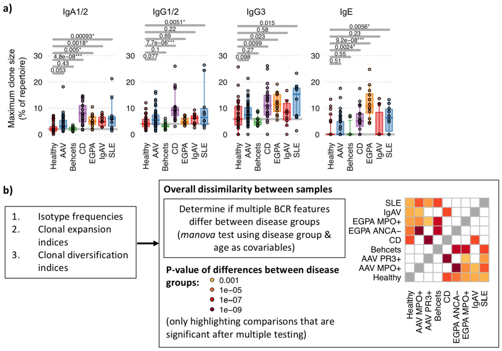
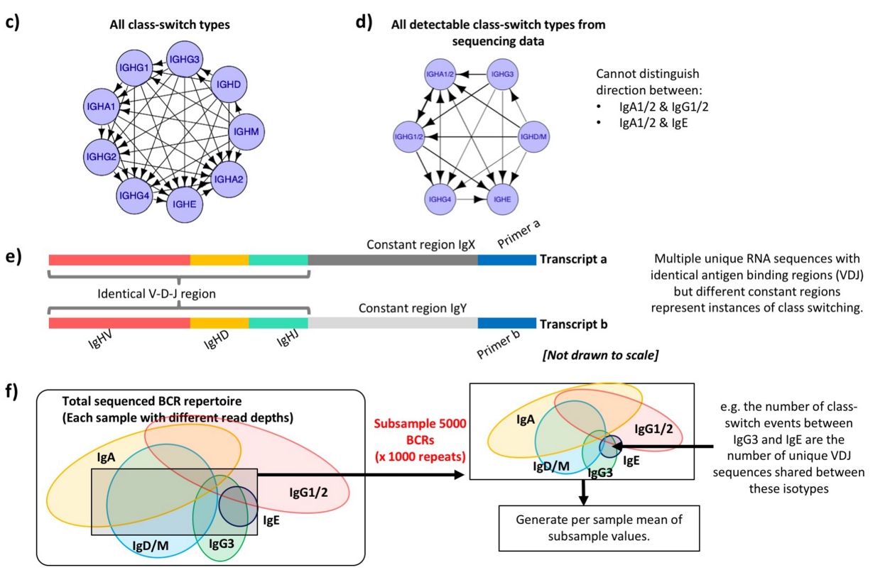
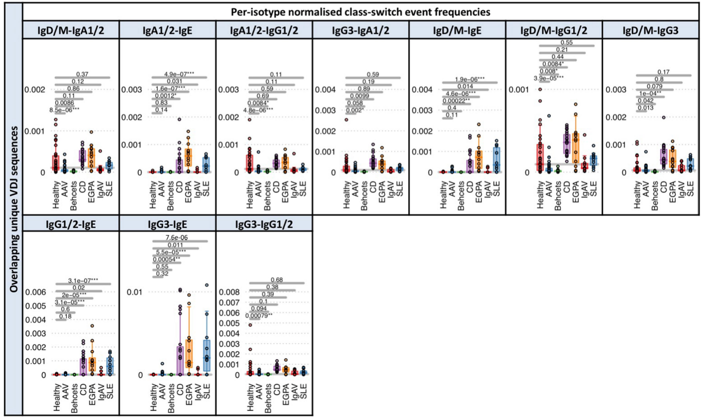

- B-cell receptor repertoires
- Experimental
- Analyzing
- Example
Example
BCR repertoire similarity between diseases and estimation of CSR(Class-switch recombination)



Box plots of the proportion of the per-isotype normalized class-switch event frequencies between isotypes for each autoimmune disease.